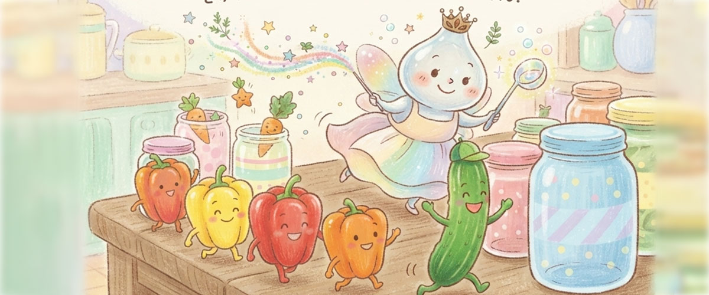
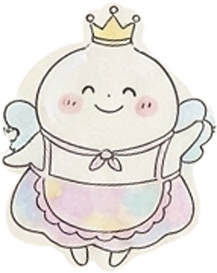
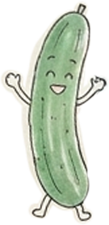
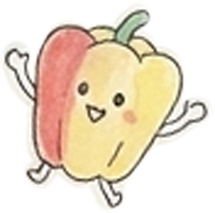
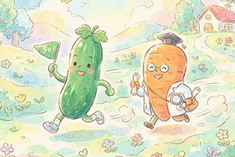
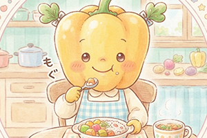
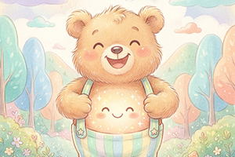
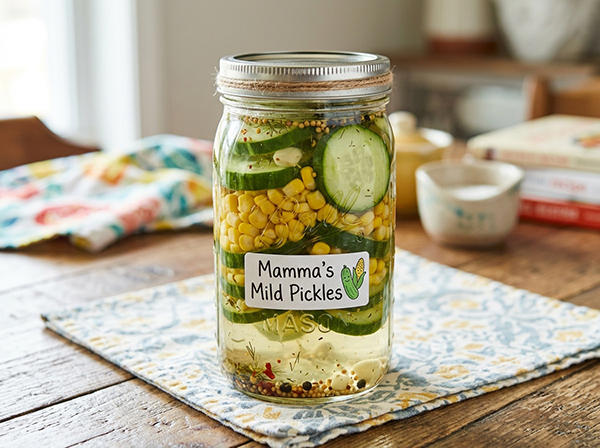
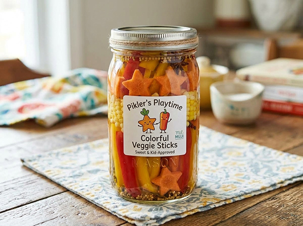

すっぱい？いいえ、あまーくておいしい！ 魔法のカラフルおやこピクルス
きゅうりもパプリカも、おいしく変身！おうちでかんたん、野菜すきすき大作戦🥒✨

おはなし：ピクルスってなーに？お酢の妖精のお話
ストーリーでわかる！

お酢の妖精「ビネガーちゃん」🧚♂️
「ピクルスはね、おやさいを長持ちさせる“まほうのスープ”に漬けたものなんだよ！」
むかしむかし、西洋（ヨーロッパ）で生まれた漬物なんだ。野菜をお酢や砂糖、ハーブで作った液に漬け込むと、すっぱ甘くてパリパリおいしい変身をするんだよ！
「すっぱいのが苦手なお子さんでも大丈夫！甘みをたっぷり足せば、フルーツみたいなおやつに変身しちゃうんだよ♪」
🥕 第一話：にんじん博士と星型マジックの巻 🌟

きゅうり君
パプリカちゃん🌟 第二話：カラフル野菜の「げんきパワー」をさがせ！ 💪
🥗 第三話：魔法のリメイク！「ピクルス液のへんしんドレッシング」の巻 ✨
🌟 変身するおやさい仲間たち
🥒 きゅうり君
漬かるとポリポリ感が倍増！王道の主役☆
🫑 パプリカちゃん
赤と黄色のカラフル担当！甘みが引き立つよ。
🥕 にんじん博士
型抜きすると超かわいい！お星さまに変身！
おはなし2：お酢のパワーでげんきもりもり！💪✨
からだにうれしい！

つかれをふきとばす！
お酢に含まれるクエン酸は、遊んだあとの疲れをとるのにぴったり！元気がわいてくるよ。

ごはんがおいしくなる！
さわやかな酸味が胃腸を刺激して、お腹がすくよ！食欲がない夏場にもバッチリ。

お腹にやさしい！
お酢の成分が防腐効果を発揮して長持ち。野菜のビタミンもそのまま摂れちゃう！
☑️ おうちにある材料でできちゃうよ！
- 穀物酢（または米酢）
- お砂糖（またはハチミツ）
- ひとつまみの塩
- お好みの野菜
おはなし3：きゅうりとパプリカのまろやかおやこレシピ 👩🍳👨🍳
作ってみよう！
すっぱさ控えめ！お子さまが喜ぶあまーいピクルス液です♪
🥒 きゅうりとコーンのまろやかピクルス
（調理時間：10分）

🛒 材料（びん1本分）
- きゅうり：2本（乱切りまたはスティック）
- スイートコーン（缶詰）：大さじ3
★ 魔法のピクルス液（混ぜるだけ）
- お酢：100ml
- 水：100ml
- 砂糖：大さじ3〜4（お好みで調整）
- 塩：小さじ1/2
🔪 作り方
- お鍋に【魔法のピクルス液】の材料を入れてひと煮立ちさせ、冷まします。
- きゅうりを一口大に切り、プチプチ食感のコーンと一緒に清潔な容器へ入れます。
- 冷ましたピクルス液を注ぎ、冷蔵庫で3時間以上置いたら完成！
🫑 パプリカと星型にんじんのカラフルスティック
（調理時間：15分）

🛒 材料（びん1本分）
- パプリカ（赤・黄）：各1/2個（1cm幅にカット）
- にんじん：1/2本（クッキー型で星型に抜く）
★ ピクルス液（りんご酢アレンジ）
- りんご酢（または穀物酢）：100ml
- 水：100ml
- ハチミツ：大さじ3（※1歳未満のお子様は砂糖に変更）
- 塩：小さじ1/2
🔪 作り方
- にんじんはサッと30秒ほど下ゆですると、柔らかく味がしみやすくなります。
- ピクルス液の材料を加熱してしっかり混ぜ、冷ましておきます。
- パプリカとにんじんをびんに敷き詰め、ピクルス液を注ぎ入れます。
🪄 野菜嫌いを卒業する3つの魔法
型抜きでたのしく！⭐️
星やハートの型で抜くと「自分で作った！」と大喜び。
甘みをプラス！🍯
砂糖やりんご酢でフルーティーにするとバクバク食べちゃう！
びんの変化を観察！👀
「明日どうなってるかな？」と観察することで食への興味UP！
✨ 残ったピクルス液もむだにしない！魔法のリメイクレシピ
ピクルスを食べ終わった後も楽しみがいっぱい！おうちの料理がぐっと美味しく変身します♪
🥔 マヨいらず！ポテトサラダ
刻んだピクルスを茹でたジャガイモに混ぜるだけ！ピクルス液を小さじ1足すと、さっぱり爽やかなお店の味に♪
🥚 自家製まろやかタルタル
細かく刻んだピクルス ＋ ゆで卵 ＋ マヨネーズを混ぜるだけ！エビフライやチキン南蛮にベストマッチ☆
🥗 魔法のフルーティードレッシング
余ったピクルス液に「オリーブオイル」と「塩こしょう」を混ぜるだけ！野菜がモリモリ食べられる特製ドレッシングの完成！
おはなし4：お気に入りのガラスびんでつくろう！🫙✨
見た目もキュート！
透明なびんにカラフルな野菜を詰めると、まるでインテリアみたい！
おすすめの容器
WECKやメイソンジャーなどの密閉できるガラス瓶がおすすめ！ジャムの空き瓶でもOK♪
⚠️ 保護者の方へ（安全上の注意）
- びんの消毒： 雑菌を防ぐため、熱湯消毒またはアルコール消毒を行った清潔な容器をご使用ください。
- ハチミツの注意： 1歳未満の乳幼児にはハチミツを与えないでください（砂糖で代用可能）。
- 保存期間： 冷蔵庫で保管し、1週間以内を目安にお早めにお召し上がりください。
よくあるご質問（Q&A）❓
Q. 酸っぱいのが苦手な子供でも食べられますか？
A. はい！お湯で薄めたり、砂糖の量を少し増やすことでツンとした酸味が和らぎます。りんご酢を使うのもフルーティーでおすすめです。
Q. 作ってからどれくらいで食べられますか？
A. 漬けてから3時間ほどで味がなじみますが、一晩置くとさらに味がしっかり染み込んで美味しくなります！
Q. 他にどんな野菜が使えますか？
A. プチトマト、大根、うずらの卵、ブロッコリーの茎なども人気です！カラフルに組み合わせを楽しんでみてください。